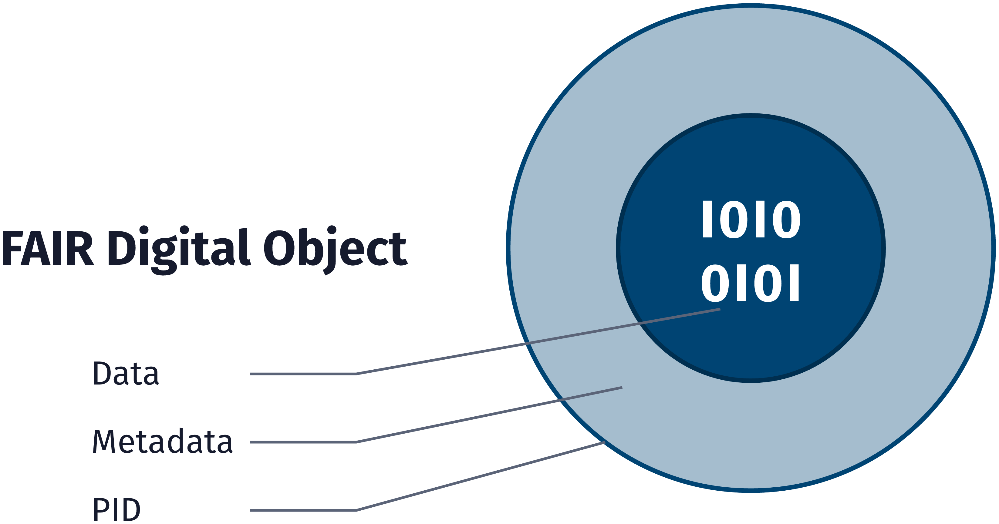
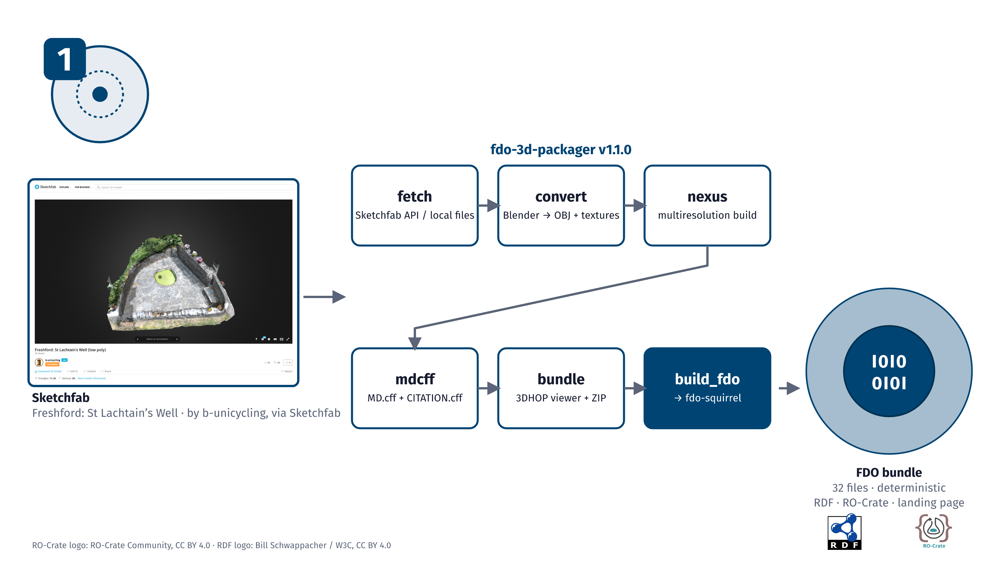
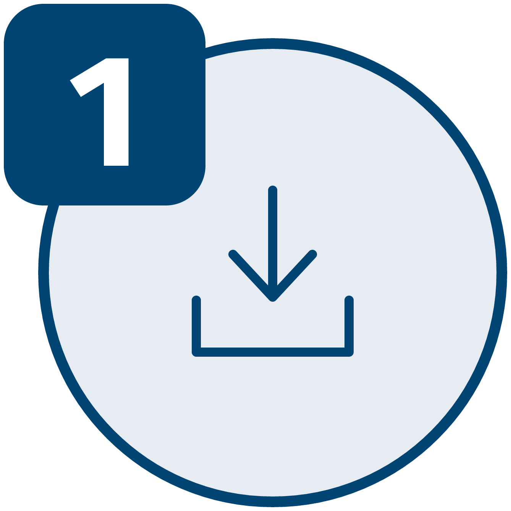
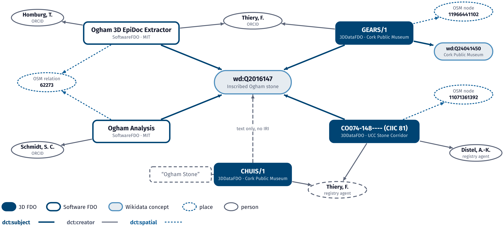

The graphics are generated by pure-Python scripts, see the repository. Third-party logos carry their credit in the graphic.
FDOx graphics
A living gallery of 53 graphics of the FDOx-squirrel family, to pick from for presentations, posters and papers. Each comes as PNG and SVG with a caption and a credit line you can copy.
Concept
The pattern, its pictograms, the schemas and architecture behind fdo-squirrel, and the FDO sphere with the community hubs.

The four-step pattern and its outcomes
The two banners: the four FDO steps and the four outcomes of FDOx.
2 graphics

Pictograms: steps and outcomes
The eight pictograms as single files: the four steps and the four outcomes.
8 graphics

Schemas, architecture and bundle views
The MD.cff and CITATION.cff schemas, the fdo-squirrel architecture, the three views of a bundle (RDF, RO-Crate, landing page) and the FDO meta graphic.
6 graphics

The FDO sphere and the community hubs
The eight pictograms around the FDO sphere, with and without the community hubs.
2 graphics
3D models
The worked example for 3D models: CIIC 81 and the registry's 3D objects, one graphic per step and per outcome.

The four steps in practice
One graphic per FDOx step with real values of CIIC 81: packaging with fdo-3d-packager (RDF and RO-Crate via fdo-squirrel), modelling, linking, federation.
5 graphics

The four outcomes in practice
One graphic per outcome: FAIR and citable, semantically queryable, interoperable, integrable.
4 graphics

Pictograms: fdo-3d-packager
The six pictograms of the fdo-3d-packager steps: fetch, convert, nexus, mdcff, bundle, build_fdo.
6 graphics
Software
Software as FDO: concept graphics and pictograms for fdo-git-packager.
Concept: planned, not implemented yet

fdo-git-packager: software as FDO
Concept graphics for packaging a Git repository as an FDO (the tool is a skeleton, nothing here is implemented yet).
6 graphics
Concept: planned, not implemented yet

Pictograms: fdo-git-packager
The four pictograms of the fdo-git-packager steps: pin, inspect, package, build.
4 graphics
3D and software
Where both meet: the story from the FKGE to FDOx, and the registry with its 3D and software FDOs as graphs.

From the FKGE to FDOx
Graphics that lead from the federated knowledge graph ecosystem to FDOx, for 3D models and software.
4 graphics

Federated knowledge graph ecosystem
Finished 3D and software FDOs in the registry and the N4O collection.
3 graphics

Ogham graph pictures
Graph pictures of Ogham stones, their 3D FDOs and the software that uses them.
3 graphics